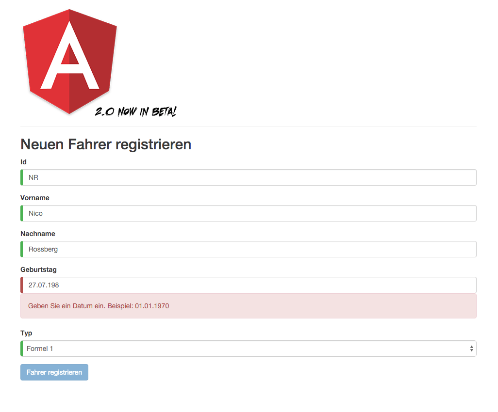
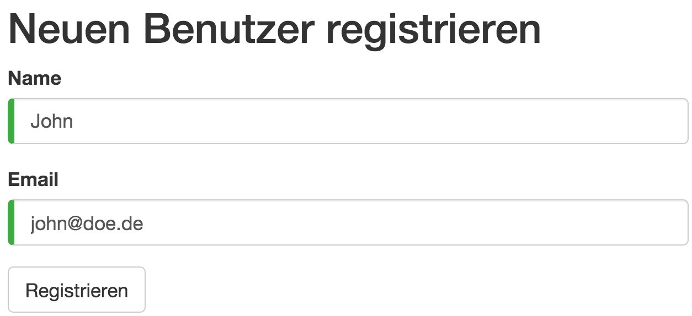

Formularvalidierung mit Angular 2.0
Das komfortable Handling von Formularen ist eine der wichtigsten Aufgaben moderner Web-Frameworks. Angular 2 zeigt, wie man es richtig macht.
Dies ist der vierte Artikel in unserer Reihe zu Angular 2.
In den vorherigen Artikeln haben wir bereits SystemJS, Templates, Dependency Injection, Unit-Testing und asynchrone HTTP-Kommunikation kennen gelernt.
Mit dabei ist stets das "Car Dashboard", welches kontinuierlich neue Funktionen erhält.
In diesem Artikel soll nun die Verarbeitung von Formulardaten im Focus stehen.

Screenshot: Das Cars Dashboard mit neuem Formular
Als Webentwickler haben wir regelmäßig mit HTML-Formularen zu tun. Sie dienen der Gewinnung relevanter Informationen, welche weiterverarbeitet werden sollen.
Neben der bloßen Eingabe der Daten spielt es eine wichtige Rolle, ein adäquates visuelles Feedback an den Benutzer weiter zu geben. Fehleingaben sollen frühzeitig signalisiert werden. Auf Änderung der Eingabedaten muss ein Formular schnell reagieren können.
Angular 2 hilft dabei, jene Anforderungen umzusetzen.
Wie gewohnt steht ein komplettes, lauffähiges Beispiel auf GitHub zur Verfügung, dass die hier besprochenen Inhalte demonstriert: https://github.com/Angular2Buch/angular2-forms
Übrigens
Ende Dezember 2015 hat Angular 2 den Beta-Status erreicht.
Die hier gezeigten Codebeispiele sollten in Zukunft kaum noch tiefgreifende Änderungen aufweisen.
Dies sind die wesentlichen Änderungen:
- Der Namensraum
angular2/angular2existiert nicht mehr. Beispielsweise befinden sich die Dekoratoren für eine Komponente nun inangular2/core. - Konstanten wie
CORE_DIREVCTIVESoderFORM_DIRECTIVESbrauchen nicht mehr explizit referenziert werden. Die Direktiven*ngIf,ngModel, usw. ... stehen nun sofort zur Verfügung. - Direktiven werden nun in
lowerCamelCaseund nicht mehr inkebap-casegeschrieben (ng-modelwird zungModel).
Die Beispiele aus den vorherigen Artikeln haben wir für Sie auf neuesten Stand gebracht:
- https://github.com/Angular2Buch/angular2-module
- https://github.com/Angular2Buch/angular2-template-syntax
- https://github.com/Angular2Buch/angular2-testing
Controls und Control Groups
Die Basis der Formularverarbeitung sind die Klassen Control und ControlGroup.
Um sie in einer Komponente zu verwenden müssen sie aus dem Namensraum angular2/common importiert werden.
import {Control, ControlGroup} from 'angular2/common';
Control und ControlGroup importieren
Control
Ein Control wertet den Wert eines Eingabelements aus. Es erweitert das Eingabeelement um Informationen, ob dessen Wert gültig oder ungültig ist oder es bereits bearbeitet wurde.
Ein Control übernimmt drei optionale Parameter. Einen Wert, sowie einen Validator und asynchronen Validator.
this.nameControl = new Control('Initialer Wert',
/* synchroner Validator -> */ Validators.required,
/* asynchroner Validator -> */ IdValidator.uniqueId);
nameControl.value; // -> 'Initialer Wert'
nameControl.errors; // -> undefined
Control initialisieren
Das Control kann im HTML-Template der Komponente über die Direktive ngControl gebunden werden.
<input type="text" ngControl="nameControl" required>
Control im Template verwenden
Je nach Zustand des Controls fügt ngControl automatisch CSS-Klassen an das jeweilige Eingabeelement hinzu.
<input type="text"
class="ng-pristine ng-valid ng-touched"
ngcontrol="nameControl"
required>
Repräsentation des Eingabeelements im Browser
Da der Status des Controls durch CSS-Klassen repräsentiert wird, kann das Element entsprechend gestaltet werden.
.ng-valid {
border-left: 5px solid #42A948; /* -> gr¨un */
}
.ng-invalid {
border-left: 5px solid #a94442; /* -> rot */
}
CSS-Klassen des Controls für visuelles Feedback einsetzen
So erhält der Benutzer, zu seiner getätigten Eingabe, direktes, visuelles Feedback.
Achtung
Die Voraussetzung für das Funktionieren eines
Controlsist, dass es innerhalb eines Formulars verwendet wird.
Grund hierfür ist, dass Angular an jedes<form>-Tag eine Instanz der KlasseNgFormanfügt, um Daten im Formular automatisch aktualisieren zu können.
Das kann zu Beginn verwirren, weil dieser Vorgang hinter den Kulissen geschieht.
- dirty: Der Wert wurde bearbeitet
- pristine :Der Wert ist unberührt
- valid: Der Wert ist gültig
- touched: Das Control wurde verwendet/bedient
- untouched: Das Control wurde noch nicht verwendet
- pending: Eine asynchrone Eingabevalidierung läuft
Zustände eines Controls
ControlGroup
In der Regel bestehen Formulare aus einer Vielzahl von Eingabefeldern. ControlGroup erlaubt es, beliebig viele Controls als Schlüssel-Wert-Paar zusammenzufassen.
class RegisterUserComponent {
userForm: ControlGroup;
nameControl: Control;
emailControl: Control;
constructor() {
this.nameControl = new Control('John', Validators.required);
this.emailControl = new Control('john@doe.de', Validators.required);
this.userForm = new ControlGroup({
name : this.nameControl,
email : this.emailControl
});
}
}
Controls einer ControlGroup hinzufügen
Auch die Controlgroup verfügt über Eigenschaften die bereits aus der Klasse Control bekannt sind.
this.userForm.value; // -> {"name":"John","email":"john@doe.de"}
this.userForm.valid; // -> true
ControlGroup auswerten
Im vorherigen Listing ist zu sehen, wie Validatoren direkt in einem Control verwendet werden (Validators.required).
Die ControlGroup kann mit der Direktive ngFormModel an das Template gebunden werden.
<form [ngFormModel]="userForm">
<input type="text"
ngControl="name">
<input type="text"
ngControl="email">
<button type="submit"
[disabled]="!userForm.valid">
Registrieren
</button>
</form>
ControlGroup im Template verwenden
Da aus userForm die Gültigkeit der Eingaben bekannt ist, kann mit Hilfe der Eigenschaft valid gesteuert werden, ob der Benutzer das Formular absenden kann.

Screenshot: Eingabeformular - Beispiel Registrierung
Vorhandene Validatoren
Derzeit verfügt das Angular Framework über drei Validatoren, die sofort eingesetzt werden können.
Diese können ebenfalls aus dem Modul angular2/common abgerufen werden.
import {Validators} from 'angular2/common';
Validatoren importieren
- required
- minlength
- maxlength
So kann für ein beliebiges Control beispielsweise eine Mindestlänge verlangt werden.
this.nameControl = new Control('',
Validators.minlength(2))
MinLength Validator
Im Formular kann ein Verstoß gegen diese Regel explizit ausgegeben werden.
<form [ngFormModel]="userForm">
<input #name="ngForm"
ngControl="name"
type="text">
<div *ngIf="!name.valid && name.errors.minlength">
Der Name muss mindestens aus zwei Buchstaben bestehen.
</div>
<!-- ... -->
</form>
MinLength verwenden

Screenshot: Validierung - Eingabefeld mit definierter, minimaler Länge
Im Beispiel wird eine lokale Referenz auf das Control angelegt. Sie ist als #name bezeichnet. Dadurch wird es möglich den aktuellen Zustand des Controls in anderen Elementen zu verwenden. Mit *ngIf wird geprüft ob ein Fehler für die Validierungsregel minlength vorliegt. Trifft das zu, wird die Fehlermeldung unter dem Eingabefeld eingeblendet.
Achtung
Es ist erforderlich, dass bei der Prüfung auf das Fehlerobjekt
errorsvorher sichergestellt werden muss, dass das betreffende Control invalid ist.
Ist das Control im validen Zustand ist das Fehlerobjektundefined. Ein Zugriff auf einen der Schlüssel verursacht dann einen Fehler.
Zugegeben, nur drei vorhandene Validatoren sind wirklich nicht viel.
Weitere eingebaute Überprüfungen werden folgen, mehrere Issues sind hierzu auf Github offen (z.B. #2961, #2962 und #5411).
Wahrscheinlich können wir mit email, url, number, date, time, week, month, min, max und pattern (regex) rechnen.
Validatoren kombinieren
Es ist auch möglich mehrere Validierungsregeln an ein Control zu binden. Dazu wird die Wrapper-Methode Validators.compose verwendet, der eine Liste beliebig vieler Validatoren übergeben werden kann.
this.nameControl = new Control('', Validators.compose([
Validators.required,
Validators.minLength(2)]))
Validatoren kombinieren
Eigene Validatoren schreiben
Eigene Regeln und Eingabeformate gibt es reichlich (Beispielsweise: KFZ-Kennzeichen, ISBN, Postleitzahl, ...). Für spezielle Anwendungsfälle können eigene Validatoren implementiert werden.
Dabei handelt es sich um Klassen die statische Methoden für die Validierung bereitstellen. Damit das Ergebnis der Überprüfung im Template ausgewertet werden kann, ist es erforderlich, dass ein Schlüssel-Wert-Paar vom Typ <string, boolean> zurückgegeben werden.
Um die Typsicherheit zu gewährleisten, kann für diesen Zweck ein Interface definiert werden.
interface ValidationResult{
[key:string]:boolean;
}
Interface für ValidationResult
Als Beispiel wird ein Validator implementiert, der prüft ob ein deutsches Datumsformat vorliegt. Der Methode germanDate wird ein Control übergeben, dessen Wert mit einem regulären Ausdruck überprüft wird. Liegt kein Datum im korrekten Format vor, wird für das Fehlerobjekt des Controls der Eintrag "germanDate": true erzeugt.
Wird kein Fehler gefunden wird null zurückgegeben.
import {Control} from 'angular2/common';
export class DateValidator {
static germanDate(control: Control): ValidationResult {
let germanDatePattern = /^\d{1,2}\.\d{1,2}\.\d{4}$/;
if (!control.value.match(germanDatePattern))
return { "germanDate": true };
return null;
}
}
Implementierung eines Validators
Der eigene Validator kann nun in der Komponente verwendet werden.
/* ... */
import {DateValidator} from 'date.validator.ts';
class RegisterUserComponent {
/* ... */
bithdateControl: Control;
constructor() {
/* ... */
this.bithdateControl: new Control('', DateValidator.germanDate);;
this.userForm = new ControlGroup({
/* ... */
birthDate: this.birthdateControl
});
}
}
Validator in einer Komponente verwenden
Im Template der Komponente kann ebenfalls eine Fehlernachricht ausgegeben werden. Hierbei ist es wichtig, dass der exakte Schlüsselname des Validators verwendet wird.
<div *ngIf="!birthdate.valid && birthdate.errors.germanDate">
Geben Sie ein Datum ein.
Beispiel: 01.01.1970
</div>
Validierungsergebnisse im Template ausgeben
Asynchrone Validatoren
Um die Validität von Eingaben zu prüfen, ist es manchmal erforderlich einen externen Dienst anzufragen.
Bei der Vergabe von neuen E-Mail-Adressen oder eindeutigen Benutzernamen ist dieser Vorgang unabdinglich.
Für solche Szenarien eignen sich asynchrone Validatoren. Sie zeichnen sich dadurch aus, dass sie eine Promise zurückgeben, in dem das Ergebnis der Überprüfung enthalten ist.
Das folgende Beispiel skizziert den Zeitversatz durch die asynchrone Prüfung anhand der Methode setTimeout.
Es wird geprüft, ob eine Id eindeutig ist oder nicht.
Ist dies nicht der Fall, so wird erneut ein Eintrag für das Fehlerobjekt des Controls erstellt ("uniqueId": true).
import {Control} from 'angular2/common';
export class DateValidator {
static germanDate(control: Control): ValidationResult {
let germanDatePattern = /^\d{1,2}\.\d{1,2}\.\d{4}$/;
if (!control.value.match(germanDatePattern))
return { "germanDate": true };
return null;
}
}
Implementierung eines asynchronen Validators
Bei der Verwendung asynchroner Validatoren ist lediglich zu Beachten, dass sie als dritter Parameter im Konstruktor des Ziel-Controls referenziert werden.
/* ... */
import {IdValidator} from 'id.validator.ts';
class RegisterUserComponent {
/* ... */
id: Control;
constructor() {
/* ... */
this.id: new Control('', Validators.required,
IdValidator.uniqueId);;
this.userForm = new ControlGroup({
/* ... */
id: this.id
});
}
}
Asynchronen Validator in Komponente verwenden
Für die Bindung im Template bieten asynchrone Validatoren eine komfortable Hilfe. Solange die Validierung läuft wird im Control die Eigenschaft pending auf true gesetzt.
Das ermöglicht visuelles Feedback für den Benutzer des Formulars und signalisert, dass die Verarbeitung im Gang ist.
Beispielsweise ist ein rotierender Indikator so mittels CSS3 schnell implementiert.
Das ungekürzte Beispiel mit der kompletten Verarbeitungslogik finden Sie auf GitHub.
<div *ngIf="id.pending">
Überprüfe Verfügbarkeit...
</div>
<div *ngIf="!id.valid && !id.pending && id.errors.uniqueId">
Diese Id exisitert bereist.
</div>
Validierungserbenisse im Template ausgeben
Fazit und Ausblick
Angular 2 ermöglicht es einen Großteil des Verhaltens eines Formulars in der Komponente zu definieren.
Templates enthalten somit wenig Validierungslogik als noch in Angular 1.
Das bereinigt das Template und ermöglicht es, die Validierung mehr in Richtung der Domänenlogik anzusiedeln.
Dies ist ein gute Entscheidung.
Eigene Validierungslogik kann schnell selbst entwickelt und in die Anwendung integriert werden.
Sobald das Konzept der Controls, ControlGroups und Validatoren verstanden ist, ergibt sich ein geradliniger Entwicklungsprozess zum Erstellen und Erweitern von Webformularen. Wir wünschen viel Spaß beim Ausprobieren.
Nun hat unsere Anwendung mitlerweile viele Funktionen bekommen.
Es wird eng auf dem zur Verfügung stehenden Bildschirm. In der nächsten Ausgabe der Web und Mobile Developer wird es um den Router von Angular 2 gehen. Wir werden Ihnen zeigen, wie Sie zwischen einzelnen Komponenten navigieren können und dabei anschauliche und für Suchmaschinen optimiere URLs erhalten. Seien Sie gespannt.
Über die Autoren

Johannes Hoppe ist selbstständiger IT-Berater und Softwareentwickler. Er arbeitet derzeit als Architekt für ein Portal auf Basis von .NET und AngularJS. Er veranstaltet Trainings zu AngularJS und bloggt unter http://blog.johanneshoppe.de/ .

Gregor Woiwode ist als AngularJS und Mac-Entwickler für ein junges Unternehmen in Karlsruhe tätig. Er veranstaltet Trainings zu AngularJS und bloggt unter http://www.woiwode.info/blog/ .
Quellen
- https://github.com/Angular2Buch/angular2-forms - Vollständiges Beispiel
- https://github.com/angular/angular/ - Offizielles Angular 2.0 Repository
- https://github.com/angular/angular-cli - Das neue Kommandozeilentool für Angular
- https://medium.com/@daviddentoom/angular-2-form-validation-9b26f73fcb81 - Weiterführende Informationen
- https://angular.io/docs/ts/latest/guide/forms.html - Dokumentation von Angular zur Formularverarbeitung